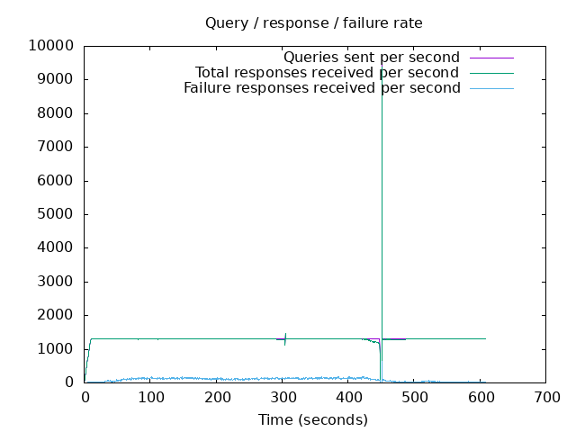
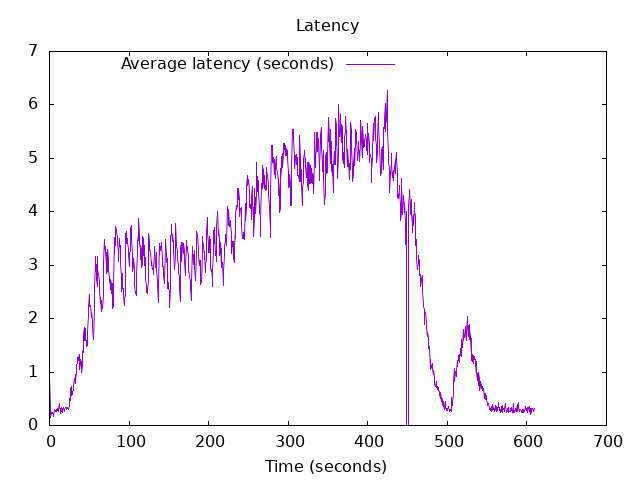

DNS Resolution Performance Testing Tool Version 2.14.0 [Status] Command line: resperf -P 20250620-0959.gnuplot -M doh -s 79.127.218.224 -O doh-uri=https://protective.joindns4.eu/dns-query -d domains_shuffled.list -C 50 -m 1300 -b 1400 -q 1000000 -R -r 10 -c 600 -t 30 -F 0 [Status] Sending [Status] Ramp-up done, sending constant traffic Warning: received a response with an unexpected id: 1620 Warning: received a response with an unexpected id: 1627 Warning: received a response with an unexpected id: 1658 Warning: received a response with an unexpected id: 1990 Warning: received a response with an unexpected id: 2001 Warning: received a response with an unexpected id: 1997 Warning: received a response with an unexpected id: 2039 Warning: received a response with an unexpected id: 2418 Warning: received a response with an unexpected id: 2414 Warning: received a response with an unexpected id: 2776 Warning: received a response with an unexpected id: 2775 Warning: received a response with an unexpected id: 3504 Warning: received a response with an unexpected id: 4663 Warning: received a response with an unexpected id: 10050 [Status] Waiting for more responses [Status] Testing complete Statistics: Queries sent: 786499 Queries completed: 784182 Queries lost: 2317 Response codes: NOERROR 494346 (63.04%), SERVFAIL 58748 (7.49%), NXDOMAIN 231088 (29.47%) Run time (s): 621.825860 Maximum throughput: 9398.000000 qps Lost at that point: 0.38% Connection attempts: 63 (63 successful, 100.00%) DNS-over-HTTPS statistics: HTTP/2 return codes: 200: 784196
 